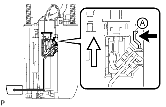

FUEL PUMP > DISASSEMBLY |
 |
| 1. REMOVE FUEL SENDER GAUGE ASSEMBLY |
 |
Disconnect the fuel sender gauge connector.
|  |
Press down on the fuel sender gauge claw labeled A. Then slide the fuel sender gauge upward to remove it.
 | Press Down |
 | Slide |
| 2. REMOVE NO. 1 FUEL SUB-TANK |
 |
Disconnect the fuel pump connector.
Disconnect the jet pump from the No. 1 fuel sub-tank.
| *1 | Jet Pump |
| *2 | Protective Tape |
Remove the tube part from the No. 1 fuel sub-tank.
Disconnect the tube from the 2 clamps on the No. 1 fuel sub-tank.
Using a small screwdriver, detach the claw from the No. 1 fuel sub-tank.
 |
Using a screwdriver, detach the 3 claws from the claw holes.
 |
Using a screwdriver, detach the 3 claws from the claw holes and remove the No. 1 fuel sub-tank.
| 3. REMOVE FUEL PUMP |
 |
Using a screwdriver, detach the 5 claws from the claw holes and disconnect the fuel pump from the fuel filter case.
| *1 | Fuel Filter Case |
Disconnect the fuel pump wire harness connector from the fuel pump to remove it.
 |
Remove the O-ring and fuel pump spacer from the fuel pump.
| *1 | O-ring |
| *2 | Fuel Pump Spacer |
| 4. REMOVE FUEL MAIN VALVE ASSEMBLY |
Remove the fuel main valve from the fuel filter case.
| *1 | Fuel Filter Case |
| *2 | O-ring |
Remove the 2 O-rings from the fuel main valve.